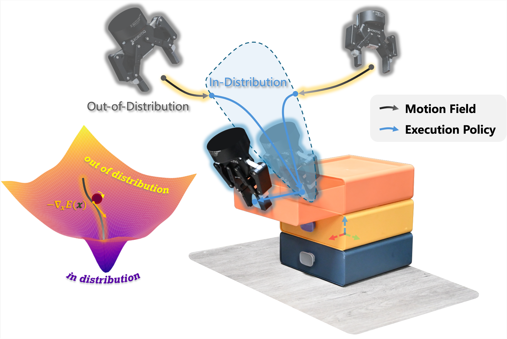

We propose Sliding into Distribution (SID), a structured framework that learns an object-centric motion field from canonicalized demonstrations to iteratively slide the system toward the demonstrated manifold and into the reliable operating region of a lightweight egocentric execution policy, mitigating out-of-distribution (OOD) execution. The motion field provides large corrective motions when far from the demonstration manifold and naturally vanishes near convergence, enabling robust reaching under substantial pose and viewpoint shifts. Within the reached regime, an egocentric policy trained with conditioned flow matching performs task-specific manipulation, supported by kinematically consistent point-cloud reprojection augmentation that preserves action--observation consistency. Across six real-world tasks, SID achieves approximately 90% success under OOD initializations with only two demonstrations, with under a 10% drop under distractors and external disturbances. Overall, SID provides a new paradigm for few-shot manipulation: explicitly managing distribution shift via online distribution recovery.